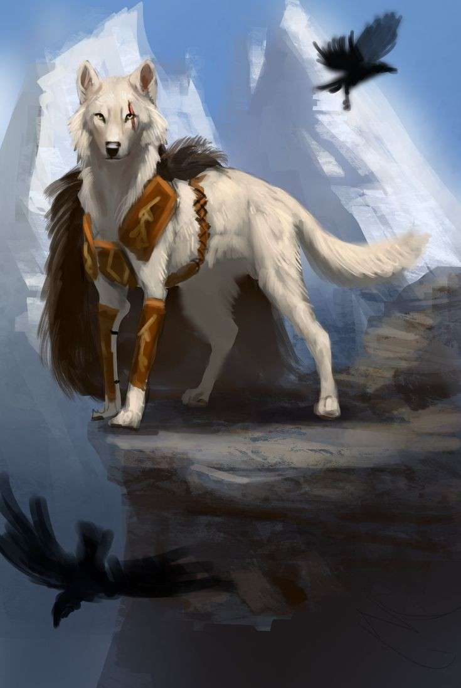

Force

Résistance
Dextérité
Magie

Ingénierie
Environnement : Archipel - La Péninsule Barbare - Garmindor
Durée de vie moyenne : 120 ans
Taille : M-G
Système politique : Tribus dirigées indépendamment, toutes sous la tutelle d'un haut-chef évitant les tensions
Statut politique : Membre de la Ligue de Vésir
Relations hostiles : -
Alliés : Ligue de Vésir
Croyance : Myzias
Force
Résistance
Dextérité
Magie
Ingénierie
Capacités innées : Force surhumaine, résistance accrue aux coups et à la douleur
Facilités magiques : Chamanisme (Éléments)
Impossibilités : Magie trop poussées en occultisme ou blanche
Les trolls naquirent en - 1 600 aux côtés des taurens. Ces deux peuples ont toujours vécu en harmonie et dans une sympathie réciproque, partageant leurs forces pour dompter les créatures des steppes et bâtir de grandes villes tribales. Ces cités, dirigées par des profils forts différents, menèrent à nombre de querelles, or le temps les fit s'estomper et une paix durable put s'installer, sous le commandement d'un haut-chef, dirigeant de toutes les tribus. Quelques années après la fin des conflits entre méduses et nagas, ces derniers vinrent s'exposer aux habitants de l'île Garmindor, leur amenant une spiritualité concrète, passant par les éléments et les fragments de couronne de Myriade. Depuis, les trolls sont des membres à part entière de la Ligue de Vésir et vivent dans une stabilité complète, loin des batailles qui déchaînèrent le Nouveau-Monde.
Profil type : Pieux - Respectueux envers la terre - Simple - Marginal
Métier répandu : Chaman
Alimentation : Omnivore - Chasse, cueillette et élevage
Montures : Grands-loups du Nord
Les trolls ont une peau dans les teintes bleues ou vertes, ils dominent d’une taille relativement imposante et ont le faciès orné de défenses proéminentes, n’ayant d'ailleurs pas grand intérêt dans leur survie mais faisant leur honneur et leur renommée. Leurs cheveux ont des couleurs naturellement exotiques, variant entre du orange et du violet, faisant de leur style capillaire une singularité au sein de l’Yndrill. Ils usent bien souvent de totems chargés de leur maîtrise poussée des éléments comme armes, et vouent majoritairement leur vie au culte et au chamanisme, faisant d’eux de redoutables adversaires, aussi prestigieux que féroces.

Nombre d'OC de cette race sur Yndrill: -